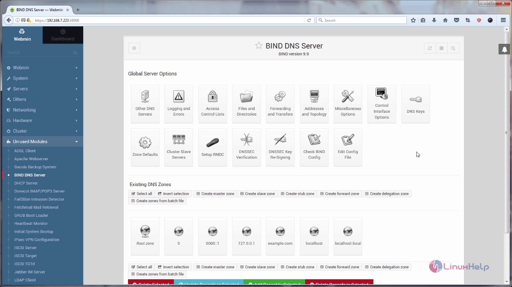
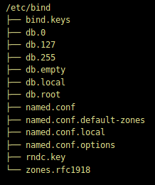

4.4. Configuración del servicio#
4.4.1. Configuración clientes#
4.4.1.1. Windows#
GUI
El servicio cliente DNS debe estar en funcionamiento en el sistema(por defecto lo está). Programas -> Herramientas Administrativas -> Servicios
Las propiedades se realizan desde la configuración de las tarjetas de red, junto con el resto de parámetros de red.
Línea de comandos
En PowerShell, a través de los siguientes comandos:
PS C:\> Set-DnsClientServerAddress -InterfaceIndex 12 -ServerAddresses ("10.0.0.1","10.0.0.2") PS C:\> Get-DnsClientServerAddress
{kind=link}
{kind=link}
4.4.1.2. Linux#
GUI
Los entornos gráficos (Gnome ,KDE….) proporcionan utilidades para la configuración de los clientes DNS en la configuración de las interfaces de red(muy parecido a Windows).
Línea de comandos
Si nuestra configuracion la realizamos sin GUI, debemos ubicar el fichero correspondiente, teniendo en cuenta que éste puede variar de una distro o version a otra.
El fichero sobre el que trabajan la mayoria de las distribuciones es /etc/resolv.conf(actualmente en muchos sistemas esto no es tan simple, y lo gestiona el demonio systemd) que guarda las direcciones IP de los servidores DNS. En nuestras distros ya sabemos que esta configuración se realiza en el fichero .yaml de netplan.
nameservers: addresses: [10.10.10.1, 1.1.1.1]
{kind=link}
4.4.2. Configuración básica servidor#
4.4.2.1. Windows#
En este módulo no trataremos la instalación y configuración de controladores de dominio(AD), aunque Active Directory necesita de DNS para poder trabajar correctamente.
GUI
De manera visual a traves de la interfaz gráfica que ofrece Windows 20XX Server y la instalación de roles y características.
Puedes encontrar un ejemplo de configuración paso a paso en el siguiente video:
Línea de comandos 1
- Instalación. Podemos ejecutar el siguiente comando para buscar el nombre del rol que debemos instalar
- Ponemos a escuchar al servidor únicamente por las interfaces que queramos(en nuestros escenarios en la tarjeta local):
dnscmd /resetlistenaddresses 192.168.200.254
- Configuramos los reenviadores(forwarders). Serán las direcciones IP a las que el servidor DNS reenvía las consultas DNS cuando no puede resolverlas de forma local.
dnscmd /resetforwarders 8.8.8.8
- Creación de una zona de búsqueda PRIMARIA y su correspondiente zona INVERSA
Creación de los registros(RR) que deseemos
- Podemos hacer uso de la instrucción Add-DnsServerResourceRecord o del comando DNSCmd/recordadd
- Exportar/Importar configuración de zona/s del DNS server a fichero/s de texto.
4.4.2.2. Linux#
BIND o DnsMasq son los paquetes utilizados en todas las distribuciones Linux, sin interfaz gráfica añadida. Su administración configuración se realiza accediendo a varios ficheros de texto (INCLUIDO EL FICHERO DE ZONA).
En nuestro caso vamos a optar con configurar el servidor BIND2. Podemos encontrar alternativas gráficas para poder configurar BIND, a través de la instalación de un panel de administración, como Webmin:
Debemos entender la estructura de ficheros que monta BIND una vez instalado, para poder realizar correctamente su configuración:

- La configuración de BIND se encuentra en named.conf, la cual se distribuye con el uso de la directiva include, entre los ficheros:
named.conf.options: Parámetros a nivel global del servidor DNS.
named.conf.local: Aquí se crean las zonas con la instrucción zone. Uno de los parámetros será la ubicación y nombre del fichero de zona.
named.conf.default-zones: Algunas zonas que incluye BIND por defecto.
db.*: ficheros de zona creadas en named.conf.default-zones. db.root=srv. Raiz.
db.empty: plantilla de fichero de zona.
Se crea un usuario bind que pertenece al grupo principal bind que también se crea. Este usuario es el que ejecuta el demonio /usr/sbin/named, al que se le pasan los argumentos especificados en /etc/default/bind9. En /var/cache/bind, referencia para todas las rutas relativas (instrucción directory en el fichero de options), es donde crearemos nuestros ficheros de zona por defecto.
Podemos gestiónar el servicio con los siguiente comandos (podemos elegir entre las dos opciones):
$sudo service bind9 [restart|start|stop|status] $sudo systemctl [restart|start|stop|status] bind9En el siguiente video encontrarás un ejemplo de configuración muy sencillo:
{kind=link}
{kind=link}
4.4.3. Mejorando nuestro servicio#
A partir de aquí podemos trabajar sobre escenarios más complejos en los que podremos incluir:
Servidores maestros
Servidores esclavos
Delegaciones de zona
 En el siguiente documento puedes encontrar un manual completo de como realizar esto tanto en Windows como en Linux. PRÁCTICA 1 Realiza la práctica 1 del Tema 3 del aula virtual, vas a crear tu sistema de servidores DNS.
En el siguiente documento puedes encontrar un manual completo de como realizar esto tanto en Windows como en Linux. PRÁCTICA 1 Realiza la práctica 1 del Tema 3 del aula virtual, vas a crear tu sistema de servidores DNS.
-
Fuente: Podemos optar por utilizar el Módulo DnsServer PowerShell o aprovoechar la sencillez del Comando DNSCMD ↩
-
Ayuda: Puedes encontrar un manual muy completo sobre DNS y BIND el siguiente enlace↩